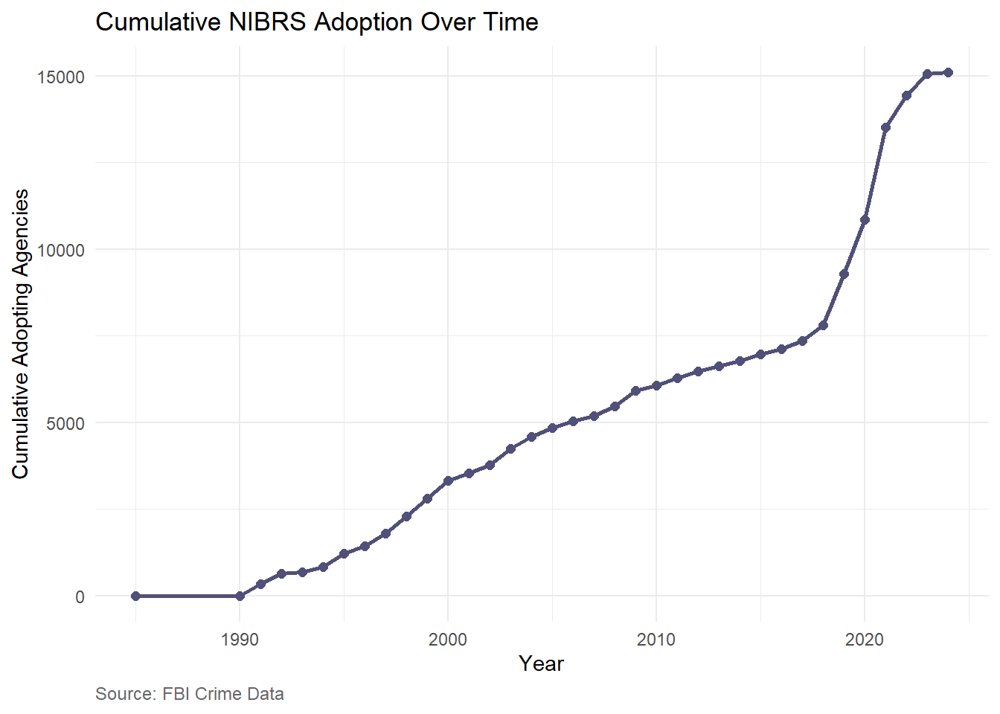
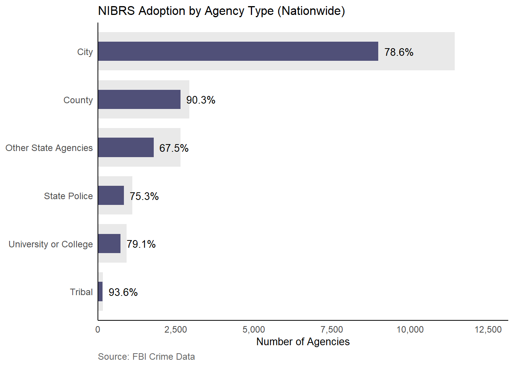
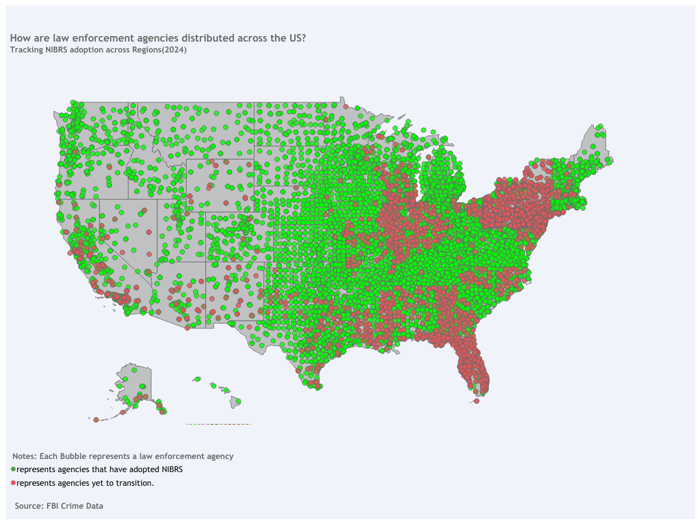
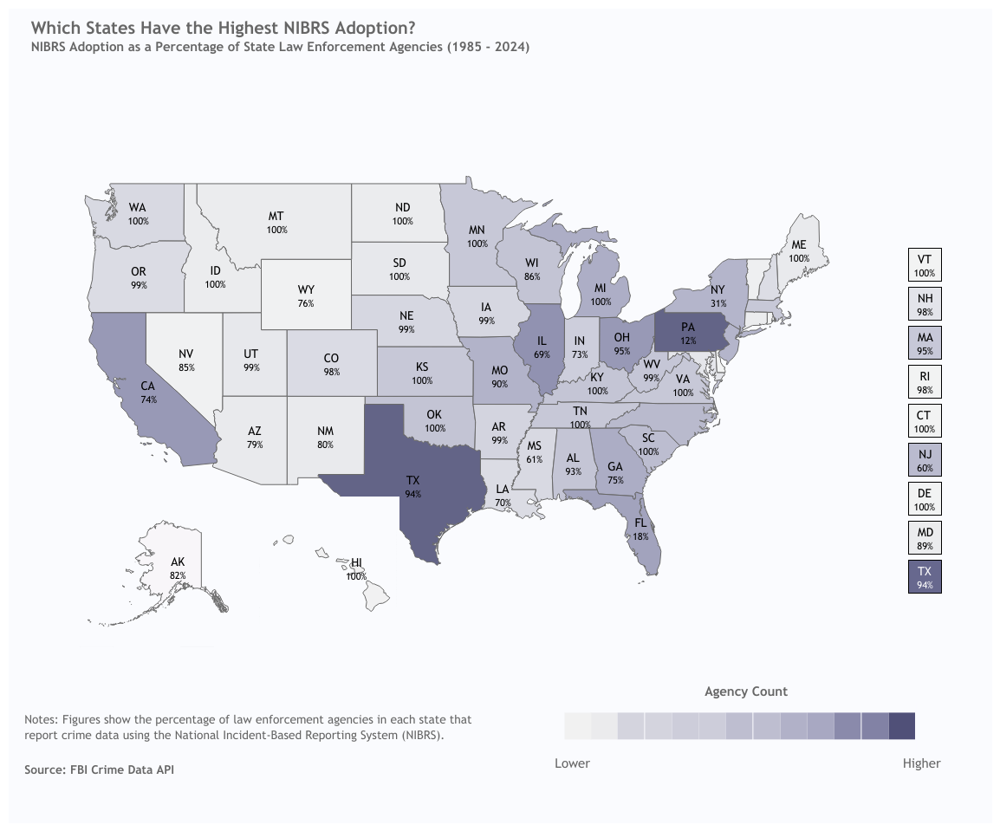
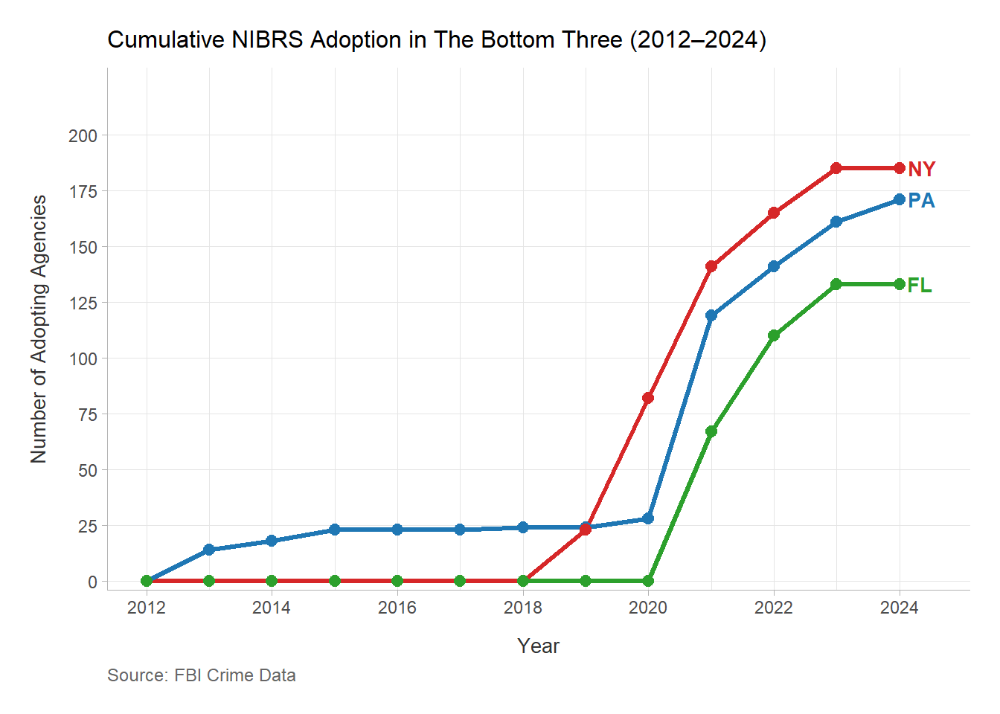

NIBRS Adoption Analysis Report
Insights into Agency Adoption of the National Incident-Based Reporting System
Introduction
National Incident-Based Reporting System (NIBRS) represents a crucial advancement in crime data collection, providing greater detail and accuracy compared to older systems. This report investigates the extent to which U.S. law enforcement agencies have embraced NIBRS, analyzing adoption patterns across the nation.
Seeking to answer questions such as: How do agency types vary? How are agencies distributed geographically within each state? What percentage of agencies in each state participate in NIBRS reporting? Are there any trends in NIBRS adoption?
The analysis begins with a broad look at nationwide trends, then narrows down to explore state-level adoption rates and agency-specific patterns. Visualizations, including a state adoption map, agency-type distributions, and a timeline of adoption, support the findings. Additionally, summary tables highlight key adoption metrics by state, providing a clear assessment of current situation.
Data Overview
Dataset for this analysis draws from the FBI Crime Data API of law enforcement agencies in the United States covering a time period from 1985 to 2024. The dataset provides details on law enforcement agencies that have submitted data to the FBI’s Uniform Crime Reporting (UCR) Program and are displayed on the Crime Data Explorer (CDE). Key variables include:
state: State where the agency is locatedagency_type: Type of agency (eg. City or County)is_nibrs: Binary indicator of NIBRS adoptionnibrs_start_date: The date on which the agency began reporting data to NIBRS
Nationwide Adoption of NIBRS
Across the United States, NIBRS adoption varies significantly among law enforcement agencies. From a total of 19166 agencies analyzed, 15105 have adopted NIBRS—a national adoption rate of 78.8%. Meanwhile, 4061 agencies have yet to transition, these figures offer an initial glimpse into the scale of NIBRS implementation, showing that while progress has been made, a notable portion of agencies still rely on older reporting systems.
Fig1.1 illustrates the cumulative adoption trend from 1985 to 2025
Adoption begins slowly, with only 2 agencies adopting by 1990, reflecting NIBRS’s early phase following its introduction in 1985. Growth accelerates in the 1990s, reaching 3,321 agencies by 2000, and continues steadily through 2010 (6,070 agencies). A period of slower growth follows, with annual adoptions averaging 200 agencies from 2011 to 2018, totaling 7,810 by 2018. The most significant surge occurs after 2018, with 1,473 agencies adopting in 2019, 1,564 in 2020, and a peak of 2,664 in 2021—driven by the FBI’s 2021 mandate to transition to NIBRS, phasing out the Summary Reporting System (SRS). Adoption slows thereafter with only 36 agencies adopting in 2024, reaching 15,105 by 2024

Fig1.2 examines NIBRS adoption by agency type, using a bar-in-bar chart to compare the total number of agencies (outer bar, light gray) with the number that have adopted NIBRS (inner bar, Purple) across the six categories
City agencies, the largest group by far, show a substantial number of adoptions but still have a notable portion yet to transition. County agencies, though fewer in number, demonstrate stronger adoption overall, reflecting a more consistent uptake. State Police agencies fall somewhere in the middle, with a moderate level of adoption. Smaller agency types, such as Tribal and University/College, stand out for their high adoption levels, possibly due to their modern systems or more recent establishment. In contrast, Other State Agencies lag behind, indicating a slower transition compared to their counterparts.
Geographic Distribution of Agencies
To further understand adoption patterns, the following map illustrates the geographic distribution of law enforcement agencies across the US, showing their NIBRS adoption status

Fig1.3: Bubbles represent a law enforcement agency with green dots indicating agencies that have adopted NIBRS and red dots representing those that have not.
The Midwest and South stand out with a dense concentration of agencies, where green dots are more numerous, suggesting widespread adoption across these areas. However, noticeable clusters of red dots are visible, particularly in parts of the South, indicating regions with a higher presence of non-adopting agencies. The Northeast shows a thick scattering of agencies, but a striking number of red dots are evident, especially in certain states, hinting at a lower adoption rate in this region. The West, with a sparser distribution of agencies, appears dominated by green dots, suggesting a higher adoption presence. Notably, regions with fewer clusters of agencies, such as parts of the West, tend to show a greater proportion of green dots compared to denser regions like the Northeast and parts of the South, where red dots are more prominent. This map reveals that while adoption is widespread, non-adopting agencies are more concentrated in the Northeast and parts of the South, paving the way for a closer look at state-level patterns.
State-Level Analysis
Building on the nationwide overview, this section examines how NIBRS adoption differs across states, focusing on the distribution of agencies and their adoption rates. The visual map below illustrates each state’s agency count and NIBRS adoption rate.

fig 1.4: Color represents the count of agencies in each state,figures show the percentage of law enforcement agencies in each state that report crime data using the National Incident-Based Reporting System (NIBRS).
Observations
- Several states including Virginia, Tennesse, Kentucky, and Oregon, have achieved 100% adoption, meaning all law enforcement agencies within these states exclusively report crime data through NIBRS
- Other high-adoption states, such as Texas (94%), Colorado (98%), and Missouri (90%), demonstrate strong integration efforts.
- California (74%), Maryland (89%), Louisiana (70%), and Illinois (69%) exhibit moderate NIBRS adoption rates, indicating ongoing but incomplete transition efforts.
- Florida (18%), Pennsylvania (12%), and New York (31%) stand out as the least compliant states, with a majority of their law enforcement agencies not complying to the NIBRS.
Agency Distribution insights
The map also suggests a relationship between the number of agencies and adoption rates :
- States with fewer agencies tend to have higher adoption rates. States like Hawaii, Vermont, Rhode Island and Maine, which have relatively small numbers of law enforcement agencies, have fully transitioned to NIBRS.
- States with high agency counts face more challenges in achieving full adoption. Texas and Califonia, despite their progress still have some agencies that have not transitioned.
- New York, Pennsylvania, and Florida, which have among the highest numbers of law enforcement agencies, also exhibit some of the lowest adoption rates.
To explore this hypothesis further, a correlation analysis was conducted between agency counts and NIBRS adoption rates. The results show a moderate negative correlation (coefficient: -0.48), with statistical significance (p = 0.00039). This indicates that states with more agencies are less likely to achieve high adoption rates, possibly due to logistical or coordination challenges.
A scatterplot (Figure 1.4) illustrates this relationship. Texas, with a high agency count and 94% adoption, and Pennsylvania, with a similarly high count but only 12% adoption, highlight the variability within this trend. This analysis sets the stage for a closer look at states struggling with adoption.

fig 1.5: Scatterplot showing the relationship between NIBRS adoption rates and the number of law enforcement agencies per state. Each bubble representing a state
Examining Low Adoption States: The “Bottom Three”
In the Northeast, Pennsylvania (11.6%) and New York (31.4%) lag significantly in NIBRS adoption despite being surrounded by high-performing states like Connecticut and Vermont, both at 100%, reflecting a regional patchwork where large agency counts and urban-rural divides may hinder progress. Meanwhile, in the Southeast, Florida (17.5%) stands out as a stark underperformer compared to neighbors like South Carolina (99.8%) and Georgia (75.3%), its low adoption contrasting with the South’s generally stronger shift toward modern reporting standards. This section examines these “bottom three” states—Pennsylvania, New York, and Florida—which collectively account for 57.5% of all U.S. law enforcement agencies yet to transition to NIBRS (2,336 out of 4,061 non-adopters) and represent 14.7% of agencies nationwide (2,825 out of 19,166)
The following highlight table (Table 1.1) summarizes the adoption statistics for the bottom three states:
| Bottom 3 States by Adoption Rate | ||||
|---|---|---|---|---|
| State | Total Agencies | Adopting Agencies | Non-Adopting Agencies | % Adoption |
| Pennsylvania | 1,477 | 171 | 1,306 | 11.6% |
| Florida | 758 | 133 | 625 | 17.5% |
| New York | 590 | 185 | 405 | 31.4% |
Table1.1
Next we assess the cummulative adoption timeline to identify patterns and inflection points, visualized in fig 1.6

Fig 1.6 illustrates the cummulative adoption trend for the bottom three states from 2012-2024
While national adoption commenced in 1985, these states recorded no transition until 2013, lagging over three decades behind early adopters. Adoption remained neglible until sharp increases between 2019 and 2021 in alignment with the FBI’s 2021 mandate. Pennsylvania shows steady growth from 2013 onward, reaching 171 adopters by 2024. New York’s adoption surged in 2019, climbing to 185 by 2024, while Florida’s transition began later, in 2021, achieving 133 adopters. These late starts and uneven trajectories suggest delayed policy prioritization or resource allocation, contrasting with the national trend of earlier, more consistent adoption.
Finally, we examine agency-type distributions within each state to pinpoint specific adoption barriers, presented in Tables 1.3–1.5:
| Pennsylvania: Agency-Type Distribution | ||||
|---|---|---|---|---|
| Agency Type | Total Count | Adopting NIBRS | Non-Adopting Count | % Adoption |
| City | 934 | 97 | 837 | 10.4% |
| County | 42 | 2 | 40 | 4.8% |
| State Police | 135 | 67 | 68 | 49.6% |
| University or College | 80 | 1 | 79 | 1.2% |
| Other State Agencies | 286 | 4 | 282 | 1.4% |
Table 1.2 Pennsylvania Agency-Type Distribution
Pennsylvania, with the highest number of agencies among the bottom three and joint highest nationally, lags significantly in adoption. City agencies, which make up the largest share, have an adoption rate of just 10.4%, meaning nearly nine out of ten have yet to transition. County agencies are even further behind, with only 4.8% adopting. Universities and college agencies also show minimal progress, sitting below 2%. The state police, however, stand out as an exception, with nearly half (49.6%) of their agencies adopting, though this still trails behind the 75.3% seen nationwide.
| New York: Agency-Type Distribution | ||||
|---|---|---|---|---|
| Agency Type | Total Count | Adopting NIBRS | Non-Adopting Count | % Adoption |
| City | 415 | 133 | 282 | 32.0% |
| County | 56 | 34 | 22 | 60.7% |
| State Police | 58 | 0 | 58 | 0.0% |
| Tribal | 1 | 1 | 0 | 100.0% |
| University or College | 30 | 14 | 16 | 46.7% |
| Other State Agencies | 30 | 3 | 27 | 10.0% |
Table 1.3 New york Agency-Type Distribution
New York is slightly ahead of Pennsylvania but still well below national benchmarks. City agencies have an adoption rate of 32%, significantly lower than the 78.6% nationwide. County agencies fare much better, with 60.7% adopting, though they still trail the national average of 90.3%. University agencies are close to the halfway mark at 46.7%. Like Florida, state police remain completely unadopted, far below the 75.3% national level. On the contrary, New York’s single tribal agency has fully transitioned, aligning with the strong nationwide adoption in that category. Overall, the state shows mixed progress, with certain agency types moving forward while others remain significantly behind.
| Florida: Agency-Type Distribution | ||||
|---|---|---|---|---|
| Agency Type | Total Count | Adopting NIBRS | Non-Adopting Count | % Adoption |
| City | 297 | 85 | 212 | 28.6% |
| County | 66 | 32 | 34 | 48.5% |
| State Police | 67 | 0 | 67 | 0.0% |
| Tribal | 2 | 2 | 0 | 100.0% |
| University or College | 19 | 9 | 10 | 47.4% |
| Other State Agencies | 307 | 5 | 302 | 1.6% |
Table 1.4 Florida Agency-Type Distribution
Florida’s adoption rates show a slightly better picture than Pennsylvania but still fall short of national trends. City agencies are at 28.6%, well below the 78.6% national level. County agencies are making more progress, with 48.5% adopting, though this is still a significant gap from the 90.3% seen nationwide. University agencies are at 47.4%, similar to New York but trailing the 79.1% national average. The state police remain entirely unadopted, mirroring the situation in New York and falling far behind the 75.3% national rate. A striking factor in Florida is its large number of Other state agencies, where only 1.6% have transitioned—one of the lowest adoption rates in this category. While Florida is not the furthest behind overall, its mix of agency types, particularly the high number of smaller agencies with lower adoption, contributes to its slower progress.
Bridging the Gap: Strengthening NIBRS Compliance
The transition to the National Incident-Based Reporting System (NIBRS) represents a pivotal step toward modernizing crime data collection in the United States, offering significant benefits for law enforcement, policymakers, researchers, and communities.Some of these benefits include enhanced data granularity, better policy and research outcomes as well as increased transparency. However, with 4,061 agencies yet to adopt NIBRS out of 19,166 nationwide, and significant disparities in states like the “bottom three” among others there is a clear need for targeted interventions to increase adoption rates in these lagging states and across the nation as a whole. To bridge the adoption gap, the following targeted solutions are proposed for priority states, alongside nationwide strategies to ensure full adoption:
- Address Coordination Challenges in High-Density States
Establish state-level coordinators to streamline communication and data submission among agencies.
Develop targeted outreach programs for city agencies, which represent the largest non-adopting group in Pennsylvania (10.4%), New York (31.4%), and Florida (17.6%). These programs should offer dedicated funding and technical support to address unique challenges, such as high caseloads.
- Encourage State-Level Mandates and Incentives
Encourage state governments with low adoption rates to mandate NIBRS adoption with clear timelines, similar to the FBI’s 2021 mandate that drove a surge in adoptions (5,701 agencies from 2019–2021).
Offer state-level incentives, such as additional funding for public safety programs, to agencies that meet adoption deadlines.
- Create a National NIBRS Adoption Summit
- Host an annual summit bringing together law enforcement leaders, policymakers, and technology providers. The agenda should include sharing success stories, such as the Midwest’s steady adoption trajectory to inspire lagging states and regions, like the Northeast, to adopt best practices as well as include dedicated sessions for low-adoption states to discuss challenges and develop customized action plans, leveraging insights from state-level timelines (e.g., Pennsylvania’s late surge post-2018).
- Build a Peer Support Network
Use regional data (e.g., the West’s high adoption rates) to encourage collaboration within regions, ensuring solutions are tailored to local contexts.
Establish a peer support network where high-adoption states mentor low-adoption states.
Areas for Future Research
To build on the findings in this report, future research could examine whether regions with higher adoption see measurable improvements in crime prevention, and investigate how collaborative networks between states could be scaled to support diverse areas more effectively.